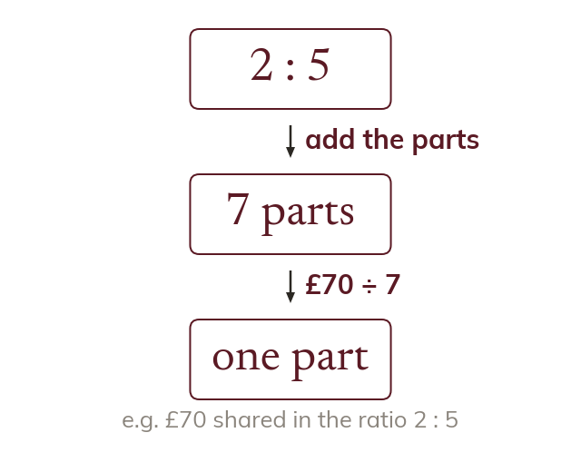

The additive view
Add the parts of the ratio to get the total number of parts. Divide the whole amount by that total to find ONE part.
A ratio can be read as a total number of EQUAL PARTS to be shared out. Adding the parts of the ratio together gives the total number of parts; dividing the whole amount by that total gives the value of ONE part.